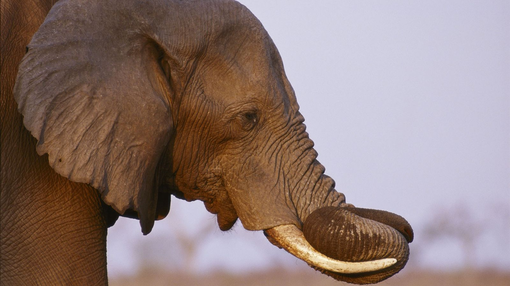

Descripción del Elefante
Los elefantes son mamíferos de gran tamaño, conocidos por su inteligencia y sus fuertes lazos sociales. Se encuentran en Asia y África, y son fácilmente reconocibles por sus grandes orejas, trompa y colmillos. Su trompa es un órgano multifuncional que utilizan para alimentarse, beber, y comunicarse.
Los elefantes viven en manadas, que son generalmente lideradas por una hembra mayor. Tienen un fuerte sentido de la comunidad y se cuidan mutuamente. La crianza de los jóvenes es un esfuerzo grupal, y las crías son alimentadas y protegidas por toda la manada.
Estos animales son herbívoros y pasan gran parte de su día buscando alimento. Pueden consumir grandes cantidades de hierba, hojas, frutas y cortezas. Debido a su tamaño, los elefantes son considerados "ingenieros del ecosistema", ya que sus hábitos alimenticios ayudan a mantener el equilibrio en sus hábitats.
Los elefantes también son conocidos por su increíble memoria. Pueden recordar lugares, otros elefantes y eventos importantes durante años. Esta memoria les ayuda a encontrar fuentes de agua y alimento, y a reconocer a miembros de su manada incluso después de largos períodos de separación.
